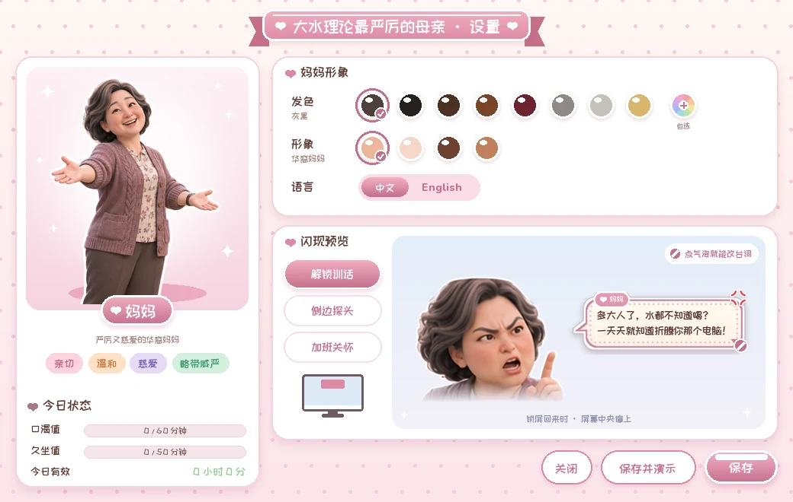

先等断点，再处理迟迟等不到的情况。
久坐软阈值后，等待切换应用或输入停顿。连续输入时先暂缓，到了硬上限再允许越过心流限制。会议、全屏、勿扰和最小提醒间隔仍有各自优先级。
少打断连续工作，也意味着提醒会延后。
记录依据 · DECISIONS D-06～D-11、D-15、D-20；实现默认值
把两个正火的梗，接到一个老需求上：
催你喝水、起身，也懂分寸的桌面妈妈。
我本来就想做一个提醒自己喝水、起身的小工具。后来在抖音上刷到大量“大水理论”和“最严厉的母亲”的内容，它们正好给这个老需求找到了新包装。
我自己每天都会遇到。
随身带大桶水，随时喝。
“XX 界最严厉的母亲”：标准最高、管得最严的人。
一个梗让需求被认出来，另一个梗给提醒添上角色和口吻；名字本身就能传播。
“大水理论”在抖音走红。
做出能用的版本：判断内核、三个出现场景，并在 Windows 上实测。
开源预览版发布：Windows 便携包与源码包。
我的判断：旧需求加上新热点，就是有传播力的产品。
名字里的“大水理论”指随身带大桶水的网络话题；“最严厉的母亲”借用的是“XX 界最严厉的母亲”这一句式。前者给了需求一个流行的说法，后者给了角色和口吻。
“最严厉的母亲”不能只剩严厉。我把她拆成两面：说话可以凶，出现必须有分寸。
多大人了，水都不知道喝？一天天就知道折腾你那个电脑！
离开电脑后回来解锁时
坐这多久了你，腰还要不要了！
久坐时，从屏幕边缘探头
画风也跟着角色走：我把原来的中国风改成养成系，更像一只陪着你的桌宠。四套妈妈形象各有立绘，台词按各自的文化口吻来写，因为我想把它做成全球都能用的开源项目。

项目模拟器用同一套判断内核回放一个编排工作日。出现 8 次，也留下 26 条被挡记录。点击时刻查看台词和账本，或切换到“暂缓记录”查看原因。
打字后切换应用，形成断点，久坐账达到 60 有效分钟。
项目模拟器回放编排的一天，并非真实用户数据。被挡记录对同类原因做了 10 分钟去重，不能当作每次尝试的总量。左右方向键切换时刻。
饮水账 60 有效分钟，久坐账软阈值 50、硬上限 100。它们是可配置的产品规则。系统只读必要状态，不截屏、不录音、不记录键盘内容；浏览器标题在内存中用于分类。
分寸规则写进程序时，会互相冲突，也需要具体的数字。下面这些默认值在实现时提出，写进决策记录，都可以调整。
久坐软阈值后，等待切换应用或输入停顿。连续输入时先暂缓，到了硬上限再允许越过心流限制。会议、全屏、勿扰和最小提醒间隔仍有各自优先级。
记录依据 · DECISIONS D-06～D-11、D-15、D-20；实现默认值
久坐到了硬上限，但离上次提醒还不到 20 分钟，先听哪一条？当前默认先守住最小间隔，避免刚提醒完又出现；这一数值可以在设置里调整。
记录依据 · DECISIONS D-11、D-15；AI 提出的默认处理
只观察提醒之后的空闲或锁屏，避免把之前的休息算成这次提醒的回应。
记录依据 · DECISIONS D-14；实现中的统计口径
判断逻辑与 Windows 接口分离。模拟器检查规则冲突，实机报告检查焦点、点击与资源。实测还暴露了渲染子进程 DPI 和辅助窗口识别问题。
视觉转为奶油色气泡与养成系立绘。角色、发色、语言和台词在设置里调整，预览气泡可直接编辑。
发布记录包含 Windows x64 便携包与源码包，并检查中文与空格路径下的离屏自检。版本为 v0.1.0-preview，尚未签名。

项目已有预览版发布记录、模拟脚本与 Windows 实测报告。
内存数据来自 11-02 的源码版单机测试；便携版长时间运行表现还需要另测。